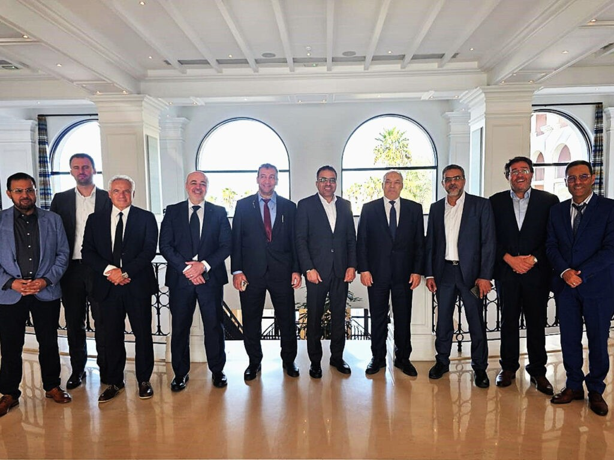

Réunion stratégique OLA Energy & Oilinvest Group :
l’énergie au
service de la croissance, la collaboration
au service de l’impact
Institutionnel 2026
Le 24 septembre, des dirigeants de haut niveau de OLA Energy Group
et de Oilinvest
Group se sont réunis à Malte pour une discussion stratégique de haut
niveau. La réunion
a réuni le président exécutif du groupe OLA Energy et son équipe,
ainsi que le PDG
d’Oilinvest et son équipe, afin d’explorer une coopération renforcée
et de nouvelles
opportunités de croissance.
Les discussions ont porté sur un large éventail de domaines,
notamment le
développement des carburants de détail, les énergies renouvelables
et vertes, les
lubrifiants, les biocarburants, le GPL, le carburant d’aviation et
les activités hors
carburants. Les deux équipes ont souligné
l’importance de l’innovation, de l’efficacité et
de la
création de valeur à long terme sur leurs marchés communs.
